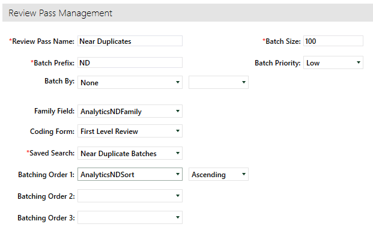

Follow
the process for setup of Full Thread or Inclusive Email Batch Review. For more information, see
|
|
Note: Email Thread batches must be created prior to creating the Near Duplicate batches for the criteria to work properly. |

Two Advanced Searches will be required for creating Near Duplicate batches.
-
First Search: Create a new Advanced Search entitled Email Thread Batches.

The criteria of the search should identify all documents that are part of the Email Thread review pass.
This can be accomplished by searching for any documents where the (Batch Set) is not the Email Threading review pass previously created.

-
Second Search: Create a new Advanced Search entitled Near Duplicate Batches.

The criteria of the second search should identify all documents that received a Near Duplicate value, that are not part of the Email Thread Batches search created above.
This can be accomplished by searching for any documents where the IA ND Family field contains a value AND the (Saved Searches) Is NOT In [Email Thread Batches].

Create a new Review Pass and identify your Advanced Search for the documents to be batched.

-
Enter a Batch Prefix
-
Enter the Batch Size of your choice
-
Set the Family Field to IA ND Family to ensure all Near Duplicates are kept together
-
Choose the Saved Search entitled Near Duplicate Batches
-
Sort your Review Pass by IA ND Sort ascending
-
Select Save
-
Select Create Batches in the bottom right corner

Important: Using these techniques together will still not cover the entire review set. Documents that are not part of email threads and are not part of near duplicate groups will still need to be batched.